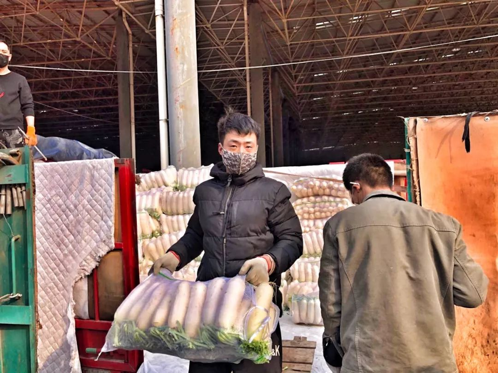
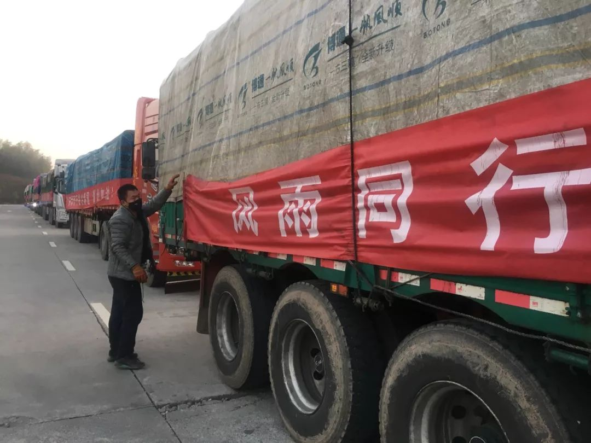
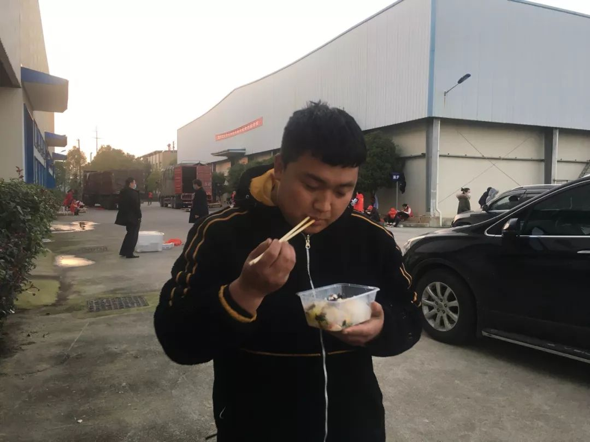
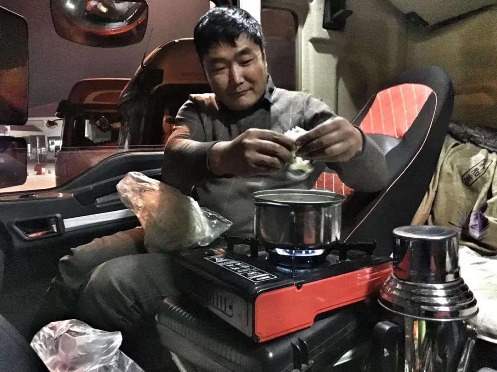
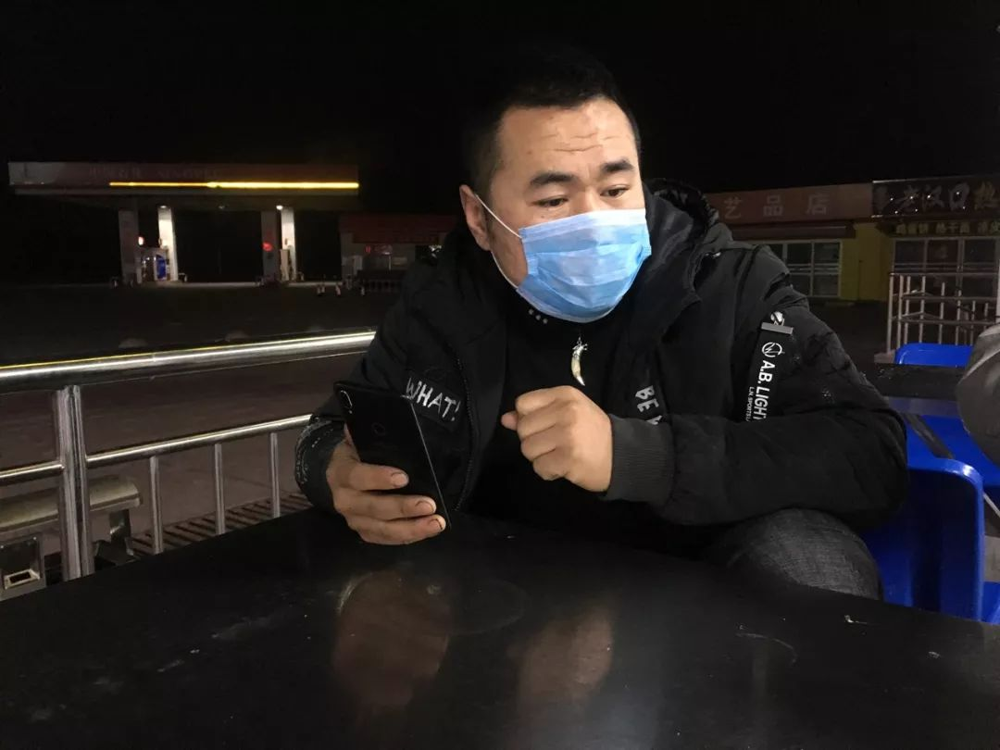
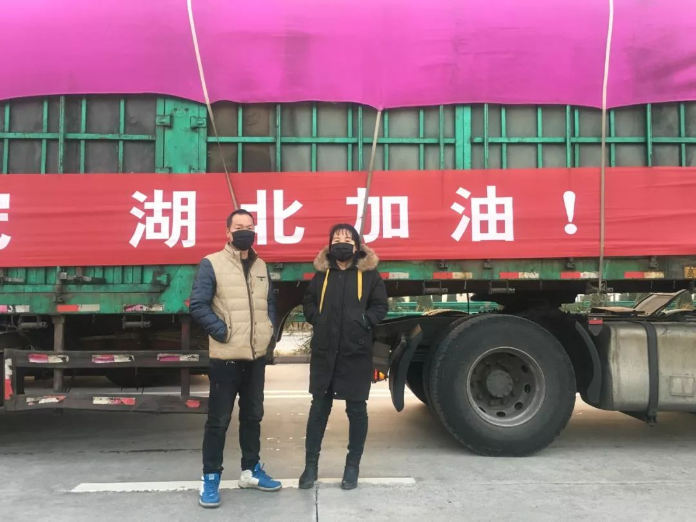
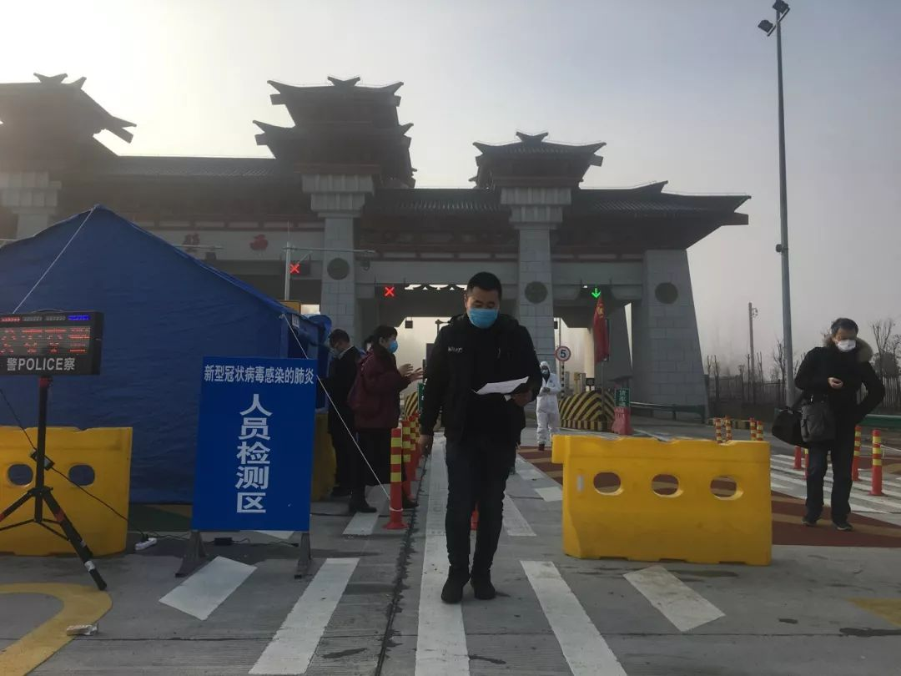
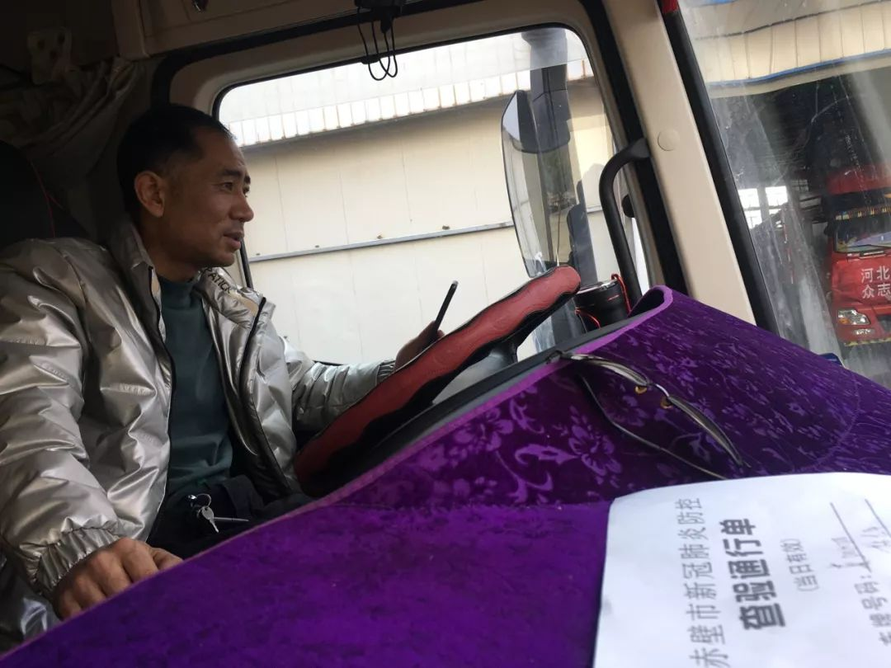

无名之辈
原文链接 备份链接 作者：王路 郭儒逸 来源：*商业人物*（ID：*biz-leaders）* 点火、踩离合、挂档、松手刹、给油…… 货车启动之后，那群无名之辈就知道自己已经成了亡命徒。 他们身上背负太多的人命，有自己的，有家人的，有同事 …
记者/ 李东
编辑/ 石爱华 宋建华

这是一支快速集结起来的运输车队，10辆卡车、12名司机。历经26小时，行驶1000公里，9日中午，将300吨蔬菜从河北邯郸运达了湖北赤壁。
截止2月12日6时，全国新冠肺炎确诊病例已达44404例，其中湖北地区累计确诊33366例。湖北全境进行交通管制之后 ，生活物资供应成为打赢这场攻坚战的重要一环。
截至2月1日12时，湖北全省已累积接受捐款69.1亿元，各类物资1002万件。而数字背后，是成百上千卡车司机从全国各地汇聚在一起的“千里逆行”。
韩志平是一名普通的卡车司机，操着一口浓重的邯郸话。2月8日，他作为队长，带领十几名“卡友”从邯郸出发，将河北的“萝卜白菜”送到湖北赤壁人的餐桌上。
北青深一度记者跟随车队一天一夜，记录了救援物资运送湖北的全过程。
01

2月8日上午8点，10辆装满白萝卜、冬瓜、西红柿等蔬菜的大货车，从河北永年出发，开往湖北赤壁。
蔬菜的捐赠人是邯郸本地的生意人宋福如，得知湖北疫情严重，物资紧缺，他从市场菜农手里买下300吨蔬菜，定向捐赠给湖北赤壁的市民。
宋福如在货运平台发布了紧急召集司机到湖北运送物资的消息后，包括韩志平在内，12名大货司机迅速集结起来组成了车队。
20位装卸师傅，用了一天半，把300吨蔬菜装满了10辆大货车。
02

受大雾影响，10辆大货车出发不久，被拦在了高速公路入口。等待时，司机武藏杰将滑落的条幅重新挂好。
武藏杰微信名叫“全国货运”，12个司机里，他嗓门最大，说起话来近乎于吼。“全国都在抗疫，咱也应该出份力！”他说自己小学毕业，说不好，但就是这个意思。
到2月8号中午，10辆大货车终于开上高速，一路疾驰。
03

车队里，弓帅航开得最快，一路在车队的最前头，在对讲机里，大伙开玩笑叫他“小飞机”。
“小飞机”是90后，这次瞒着家人出来，希望报道别写他真名。他曾跟车去过老挝，从国外往国内运香蕉，他希望在全国各地留下自己的足迹。九寨沟地震时，他曾跟车运送救灾帐篷，自称是见过“大场面” 的人。“小飞机”说，送这批蔬菜是解燃眉之急的，“知道没东西吃，是啥感觉吗？”他说，他在运输途中有过这样的经历。
04

车队上了高速3个多小时，队长韩志平车上的警报响了，他不得不把车停下来检查。韩志平45岁，是一位有着20年驾龄的老司机，每次出发前，他必得将车仔仔细细检查一遍。
一路上，韩志平的“唠叨”没停过，一会提醒“慢点，夜里到了也不能卸车”，一会又喊“别跑快了，80km/h最省油”。他始终保持在队尾，万一前车出毛病，他可以第一时间去救援。
2月8日晚上10点，车队行驶超过600公里，在靠近湖北省界的灵山服务区停靠休整。
05

夜里10点30分，李龙飞在自己的车上支起瓦斯灶煮面条吃，搭配着方便面调料和白菜叶。
李龙飞跑大车已7年多，媳妇是位“卡嫂”，因为这次运输有感染风险，他没有让妻子随车。为了让妻子放心，临行前他给自己准备了口罩。
李龙飞说，这趟来湖北并不是赔本跑车，蔬菜捐赠人给司机提供了油耗车损补贴。“有些事，不做会后悔一辈子”。李龙飞边吃边说，一脸憨厚，在服务区吃完饭，他又开始给媳妇打电话汇报行程。
06

司机李永军47岁，是车队里的老大哥，他一路小心翼翼地照顾着一车的冬瓜。
出发前，家人提醒李永军湖北可能会下雨，怕冬瓜被雨淋了会烂，他专门新买了塑料布将车箱罩住。经过一段正在维修的路面时，李永军特意放慢了车速，生怕冬瓜被颠坏。
在灵山服务区吃了一份泡面后，李永军拿起手机查看天气，发现后天才有雨，笑着说：“看岔了，不过有备无患”。
07

内蒙古人王海青，是车队里唯一的外省人。大年初七，他从老家出发运货到北京，最后至邯郸市永年。
到邯郸时，正巧赶上这批蔬菜的捐赠人在招募运输司机，他二话没说，加入了车队。
防疫形势严峻，据他说，内蒙古老家的村子都已经不让村民随意进出，这次去湖北，家人很担心，他给家里打完平安电话，才躺进车厢里睡下。
大家约定好，2月9日凌晨4点继续出发。
08

周红涛、冯翠花是一对夫妻。夫妻俩看到运送这批物资的消息时，没有犹豫就报名了。
怕路上没饭吃，他们买了一箱方便面备着。“实在没有饭吃，我们车上还有一车白菜嘞”，夫妻俩打趣道。
夫妻俩在外跑车多年，头一回运送救灾物资。路上，他们通过手机查看新闻，了解到湖北疫情紧急，冯翠花更加觉得这趟“值！”
在灵山服务区休息时，两辆去武汉送面条的大货车司机也在此休息，聊起来才知道，面条的卸货地点距离火神山医院很近，临别前，双方互道保重。
* 09 *

2月9日凌晨4点，对讲机里传来出发的信号。
6点，进入武汉境内，司机们都带上了口罩。对讲机里又传来了队长韩志平的提示，“注意防护，大家不要再打开车窗。”
上午8点半，车队达到武深高速赤壁西出口，现场值班的防疫人员给每辆车辆逐一消毒。
* 10 *

在赤壁西高速口，车队的12名司机在提交证件、接受体温测量和登记后，分别拿到了车辆通行证，通行证期限为2天。

值班民警告诉卡车司机候旭亮，通行证上已经清楚的标出了通行时间段，车必须在规定的时间段驶出赤壁。如果超时，就会影响车辆通行。
“非常感谢对赤壁的支援，为了安全，我们不握手了”。值勤的民警、防疫工作者提醒司机师傅务必勤洗手、戴口罩。
* 11 *

2月9日中午，运输车队与赤壁民政局完成了捐赠物资的交接。到物资交接区，韩志平了解到，物资到达前一天，就有一些单位组织来免费取菜，其中包括医院、福利机构、职能单位的食堂等。
卸车的时候，赤壁当地的防疫部门给司机和车辆出具了运送物资的证明材料及通行证。有了这个证明材料，可以免去返程高速的过路费。
【反侵权公告】本文由北京青年报与腾讯新闻联合出品，未经授权，不得转载。


送别李文亮医生：愿天堂没有病毒| 深度报道

鄂A牌车30小时归乡记 | 深度报道

一个武汉红十字会志愿者的自述 | 深度报道


原文链接 备份链接 作者：王路 郭儒逸 来源：*商业人物*（ID：*biz-leaders）* 点火、踩离合、挂档、松手刹、给油…… 货车启动之后，那群无名之辈就知道自己已经成了亡命徒。 他们身上背负太多的人命，有自己的，有家人的，有同事 …
原文链接 备份链接 口述 黄晓民 采访 张瑾 联系到黄晓民时，已是 2 月 2 日晚上 8 点多，他刚协调完一批送给医院的物资回到家中。电话那头传来咳嗽声。 黄晓民，38 岁，南国地产的一名市场推广。1 月 23 日成立武汉 123 志愿 …
原文链接 备份链接 武汉“封城”后公共交通停运，自1月24日开始，路上开始出现民间自助形式的车队。私家车主轮班，车队昼夜不停，每天接送医护人员、运输医疗物资，每送一趟要用75%酒精浓度的消毒液喷洒一遍车辆，油钱、防护口罩、消毒液都自掏腰 …
原文链接 备份链接 【财新网】（记者 赵今朝 综合）世卫组织正式将新冠病毒肺炎正式命名 “COVID-19”。疫情形势依然复杂严峻，疑似病人存量缓慢消化，医疗资源“捉襟见肘”，基层社区防控落实不到位。保卫战胶着状态之下，湖北省卫健委骤然 …
原文链接 备份链接 非常时期，武汉成了全国人民挂念、祈福的城市。封城后，武汉人民的真实生活是什么样？ 正和岛自1月26日起特别推出《叶青：我在武汉疫区的第N天》专栏。叶青是一位定居武汉40年的市民，也是一名学者和官员。接下来的一段时间， …